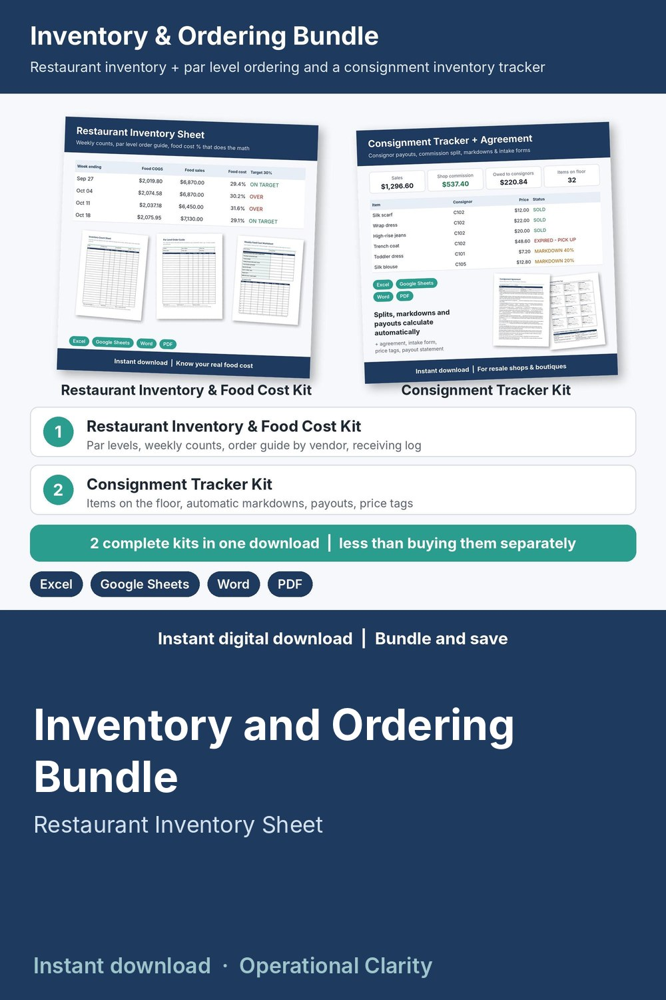

Inventory and Ordering Bundle

Two complete inventory and ordering kits in one download, for less than buying them separately: a restaurant inventory sheet with a par level order guide, and a consignment inventory tracker that calculates markdowns and payouts.
WHAT'S INSIDE
- Restaurant Inventory & Food Cost Kit:
* Restaurant Inventory & Food Cost Calculator (Excel / Google Sheets): items and par levels, weekly counts, purchases by week, food and beverage cost %, waste log, and an Order Guide that lists every item below par with the cases to order by vendor
* Printable Word + PDF sheets: inventory count sheet by storage area, bar and beverage count sheet, par level order guide, receiving log, weekly food cost worksheet, waste log
* START HERE guide
- Consignment Tracker Kit:
* Consignment Tracker & Consignor Payout Calculator (Excel / Google Sheets): consignors with their own split, every item on the floor, automatic markdowns by days in shop, sales, payouts due and a one-click payout statement
* Word + PDF: consignment agreement, consignor intake and inventory schedule, printable price tags, payout statement and pickup release
* START HERE guide
- Bundle START HERE guide (PDF) that tells you where to begin
HOW IT WORKS
1. Open the bundle START HERE, then the guide for the kit you need first.
2. Type your items, case sizes and par levels (restaurant) or consignors and items (resale shop).
3. Counts, order quantities, markdowns and payouts calculate for you.
Example data shows how everything connects; delete it and type your own. Yellow cells = type here, green cells = calculated.
FORMATS
- Excel .xlsx (works in Excel and Google Sheets)
- Word .docx (edit in Word, Google Docs, Pages or LibreOffice) + PDF, US Letter
This is an instant digital download, no physical item will be shipped.
Editable templates, not legal advice: have the consignment agreement reviewed by a local attorney. Follow your local health code for food storage and receiving.